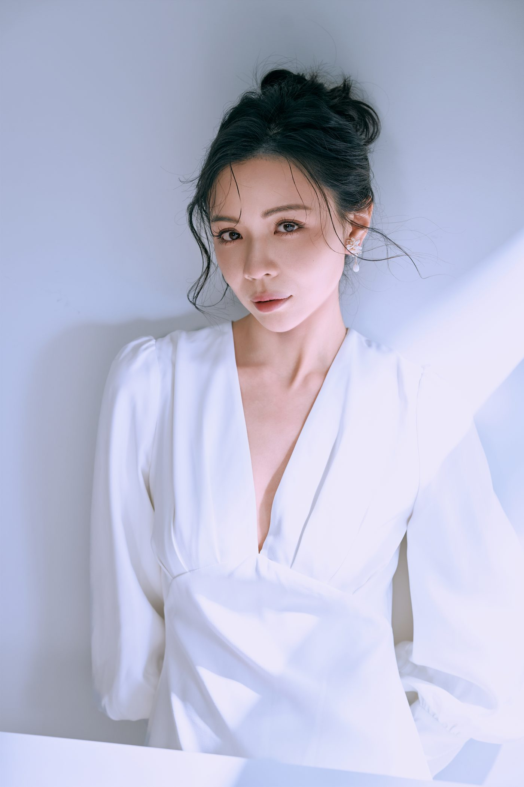
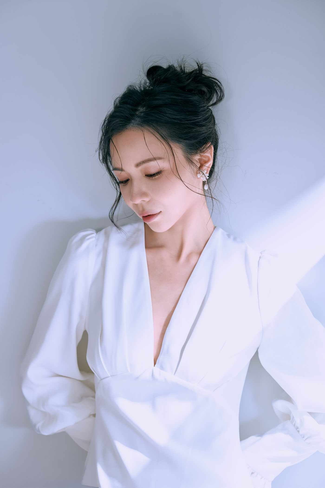
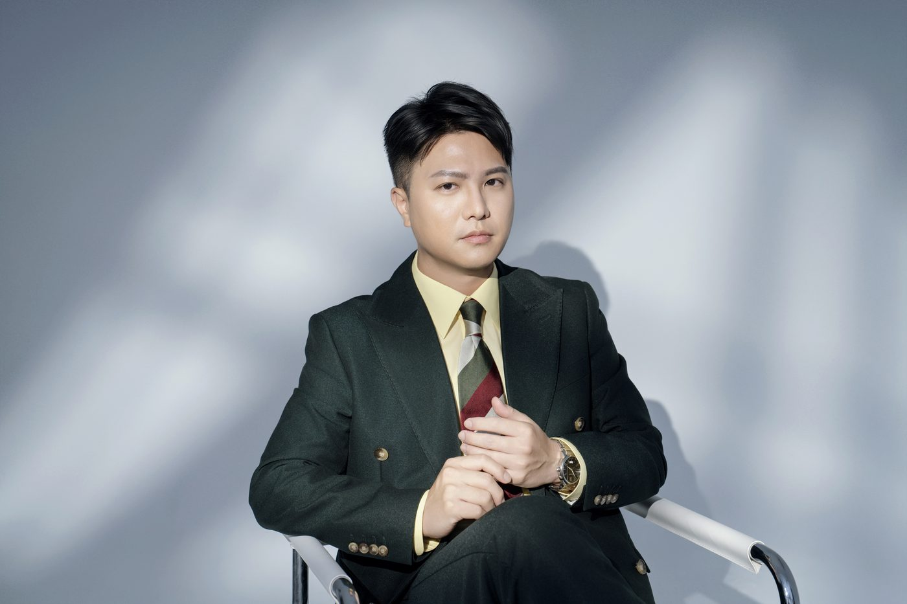
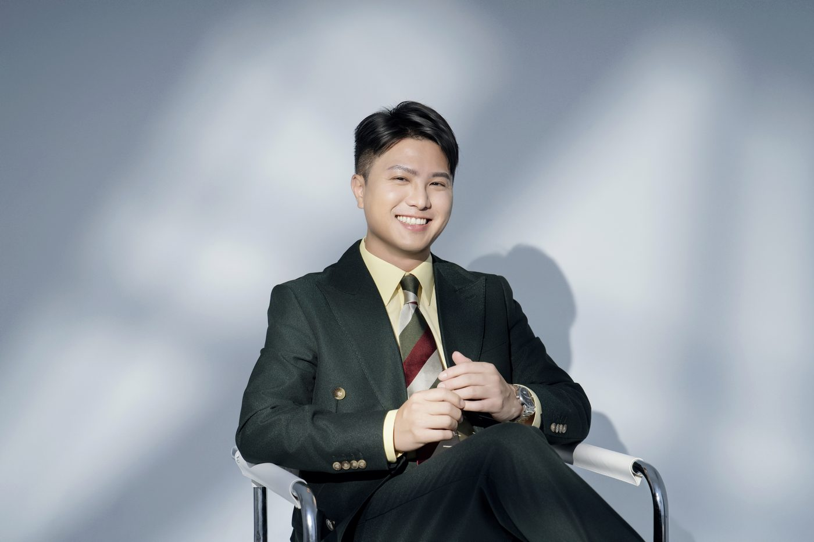

拍照表情不自然，其中一個原因，是太在意自己現在看起來怎麼樣。
明明平常聊天時笑得很自然，一面對鏡頭，卻開始注意嘴角有沒有上揚、眼睛會不會瞇起來，連笑容都變得刻意。
與其反覆練習該怎麼笑，不妨先想想：這張照片希望讓誰看見？想傳達什麼感覺？
當注意力回到自己想表達的內容，表情也比較有機會隨著情境自然變化。
為什麼越想控制表情，越不自然？
因為刻意維持一個表情時，注意力容易一直停在自己的臉上。
平常說話時，表情跟著對話變化，我們很少檢查自己的嘴角和眼睛。鏡頭出現之後，注意力轉到「我現在看起來怎麼樣」，原本自然流露的表情，反而變成刻意控制每個細節，維持久了也可能顯得不自在。
研究上也有相關的觀察。Ekman、Davidson 與 Friesen 1990 年比較了兩種笑容：只有嘴角上揚的，和同時牽動眼睛周圍肌肉的，後者稱為 Duchenne smile。受試者觀看影片時，Duchenne smile 比較常出現在愉快的片段，也和受試者自述的正面感受關聯較強（原始論文）。
這項研究看的是笑容和情緒的關聯，沒有測試拍照練習的效果。它提醒的只是：笑容跟當下的感受有關。所以下面的做法是實務上的建議，拍照時與其命令自己笑，可以先處理你正在想什麼。
拍照時眼神要看哪裡？
可以先看向鏡頭中央的一個點，或依攝影師的引導調整視線。
「看鏡頭」這個指令太大，視線容易飄掉，或越看越用力。把目標縮小到一個點，眼神就有地方停。
看不看鏡頭，要看照片的用途。官網、名片、LinkedIn 頭像適合看鏡頭，讓看照片的人感覺你正看著他；情境照可以看向別處，拍出工作中、對談中的感覺。同一次拍攝，兩種可以都拍。


表情要自然，心裡可以想什麼？
想一個要面對的人，和一句要對他說的話。
可以用三件事來整理：
| 做什麼 | 例子 | |
|---|---|---|
| 焦點 | 給視線一個明確的落點 | 鏡頭中央的一個點 |
| 對象 | 想清楚這張照片要面對誰 | 官網用的照片，想著平常真的會接觸的客戶；招生用的，想著學生或家長 |
| 內容 | 你正要對他說的那句話 | 不必說出口，在心裡走一遍就好 |
想著「這個方案我很有把握」，跟想著「等一下拍完要去哪裡吃飯」，帶出來的神情不一樣。這也是為什麼與其被要求「笑一個」，聊聊你正在做的專案、想像正在跟客戶說明方案，表情比較容易跟著出來。CHUN.EN 拍攝時，攝影師也會用聊天和具體的情境帶出表情，不只喊「笑一個」。
拍攝前可以怎麼練？
練進入狀態的方法，不要練一個固定的笑。下面四件都不需要對著鏡子：
| 練習 | 怎麼做 | 為什麼有用 |
|---|---|---|
| 準備三個話題 | 正在做的專案、最近學會的東西、讓你有點不服氣的那件事 | 被問到時有話可講，注意力比較容易離開自己的臉 |
| 錄十秒影片，不照鏡子 | 用手機前鏡頭講十秒其中一個話題，回放看哪一秒臉是活的 | 可以看到說話時，表情怎麼跟著語氣與停頓變化 |
| 閉眼再睜開 | 閉眼吸一口氣，吐氣時睜開眼睛看向前方，重複幾次 | 短暫中斷凝視，再重新確認視線的落點 |
| 先決定要哪一種神情 | 寫下兩三個形容詞，例如可靠、沉穩、好親近，挑出這組照片最需要的一個 | 方向先定，現場比較好判斷要往哪裡調 |
不建議對著鏡子練一個固定的笑。只練一種笑，拍攝時容易每張都回到同一個表情，整組照片看起來會很像。多拍幾種神情，再一起比較。
至於哪一種神情適合這次的用途，是拍攝前就要想清楚的方向問題，〈哪一個版本的你，該被拍下來〉談的就是這件事。
笑起來眼睛會瞇，要忍住不笑嗎？
不用忍，多拍幾種程度的笑，一起比較。
從嘴角微微上揚，到真的笑開，各拍幾張，再跟攝影師一起挑最像你的那一張。眼睛瞇不瞇，看照片比在鏡頭前擔心準。


一緊張表情就僵，怎麼辦？
說出來，讓現場先拍不需要直視鏡頭的畫面，最需要眼神的幾張往後放。怕拍照的人在現場可以怎麼做，〈很怕拍照，一拍就僵硬怎麼辦？〉有完整的整理。
拍攝當天，你不需要帶著一張練好的表情來。準備幾個熟悉的話題，把注意力放回一個具體的人和一句具體的話上，剩下的交給現場。
常見問題
拍照表情不自然怎麼辦？+
拍照表情怎麼練比較好？+
拍照時眼神要看哪裡？+
笑起來眼睛會瞇，要忍住不笑嗎？+
想了解形象照的拍攝流程與方案，見 C.photos 服務頁。